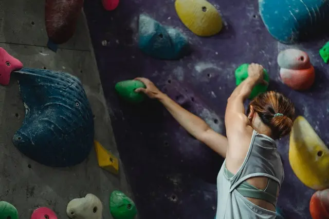

Jakich chwytów używać podczas treningu na chwytotablicy
Najprościej mówiąc powinniśmy trenować na chwytach, które spotykamy w skałach, chwytotablica to dobre narzędzie żeby przygotować nasze palce, np. jeżeli droga posiada dużo Full Crimpa to powinniśmy skupić nasz trening właśnie na tym konkretnym chwycie.
Na początku podzielmy chwyty na dwie kategorie:
Chwyty Aktywne, głównie korzystają z naszej siły, powinniśmy w większej części na nich skupiać nasz czas treningowy.
Najczęściej trenowane chwyty:
- Half Crimp 4 palce
- Half Crimp pierwsze 3 palce
- Half Crimp tylnie 3 palce
- Full Crimp
- Ścisk
Chwyty pasywne, bardziej korzystają ze skóry i tarcia na chwytach, mniej odpowiednie do treningu, natomiast powinniśmy pamiętać o utrzymaniu balansu pomiędzy chwytem otwartym i półotwartym.
Najczęściej trenowane chwyty:
- Open Hand 4 palce
- Open Hand pierwsze 3 palce
Które wybrać?
Powinniśmy główną część naszego treningu skupiać na chwytach aktywnych, mają one największe przełożenie na wspinanie. Pamiętajmy, jeżeli twoja droga posiada dużo obłych chwytów, na pewno chwyt otwarty przełoży się lepiej.
Ściany Systemowe
Chwyty aktywne trenujemy także na ścianach systemowych typu MoonBoard,gdzie musimy rzeczywiście mocno zacisnąć nasze palce i pociągnąć daleko ,chwyt otwarty nam na to nie pozwoli przez co często zjedzie i będziemy mieli problemy z dalekimi ruchami.
Przełożenie chwytu aktywnego na pasywny
Z racji że wiszenie na chwycie aktywnym jest głównie testem naszej siły, którą posiadamy, a nie wiszeniem na skórze, łatwo jest przełożyć siłę tego chwytu na chwyt pasywny co już gorzej działa w drugą stronę.